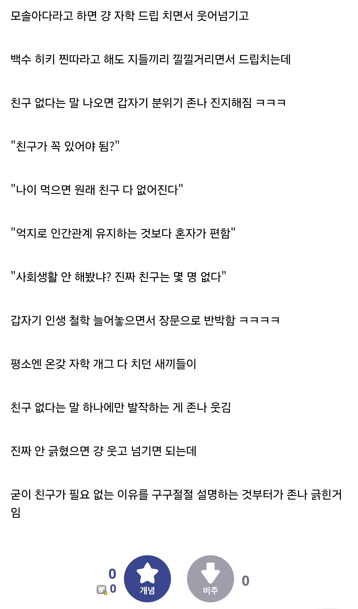

커뮤충들이 친구 없다는 말에 유독 긁히는 이유.txt
댓글
대머리한테 대머리라고 하면 안 긁힘?
직장 생기니까 중고등학교때 친구들보다 회사 동기랑 더 많이 놀게 되더라
스케쥴이 안맞아~
친구없는 걸 약점 내지 치부라 생각하니까 긁히는 거임
그렇게 생각 안하면 됨
나도 친구는 고등학교 대학교친구 뿐이라
고등학교때 친구 없고 대학 안갔으면 친구 사귀기 쉽지 않았을거같긴해
지가 쓰고 지가 가져왔네
본인 얘기니까 ㅋㅋㅋ
친구 많고 적은것도 장단이 있는거고 갖고싶다고 가질수있는것도 아니고 머 그런거지
중고딩때 친구같은 친구가 필요없다는거지
친구 필요하긴해
같은 취미랑 가치관, 직무를 가진 친구들은 사귀면 앞으로 생활에 도움됨
서로 적당히 존중하고 좋은 정보나누고 같이 즐기고 하면서
동반 성장하는거지
친구들과 인생 루트가 비슷해지고 비슷하게 잘 살게되던데
하방이 방어되는느낌
여소를 해줘도 친구들 정도(나정도)되는 여자 소개시켜주고
부동산 투식 재테크정보 등등 나누고
직무관련 지식도 나누고
나쁜정보는 바로 공유해서 피하고.. 병신짓하면 진압하고
굳이 이유를 따져보자면 모쏠은 단지 이성적인 매력이 부족하거나 기회가 없어서라는 면피가 되는데, 친구 없는건 진짜 밑바닥이라 그런거 아닐까
그냥 저런 글을 별로 본 적이 없는데
친구 한 명이나 백 명이나 큰 차이는 없다고 봄.
근데 친구 0명은 그 사람에게 문제가 있는게 맞음
ㅋㅋ나에겐 수많은 개붕이 친구들이 있어서 안심
난 회사 동료도 친구라 생각하는 쪽인데
회사동료 안에서도 가까운사람있고 좀 덜 가까운사람이 있긴하지
호형호제하면 친구아니냐 ㄹㅇ
회사 퇴직 후에도 연락하고 만나고 술먹고 하면 친구
근데 그런 사람 별로 없더라.....
퇴직하면 멀어지는건 쩔수여 ㅋㅋ
좋은동료네
내가 인복이 좀 있어
본인이 사람을 끌어당기는 매력이 없더라도
스스로 조금만 노력하면 친구는 얼마든지 유지가 됨
그니까 친구 없다, 필요없다는 사람들은
매력도 의지도 노력도 없는 찐따들임
친구 없으면 교회라도 나가라.. 그럼 교회에서 불쌍한사람 취급해서 죽었는지 살았는지는 확인해 줄거다..
누군가는 먼저 연락을 해야 유지됨
나한테 꾸준하게 연락해주는 사람들이 너무 고맙더라 ㅋㅋ
저기서 글쓴지 20분밖에 안된 조회수16짜리 0추0비추 글이 광속으로 개드립 추천40개 ......
이런글에 공감하는 개드리퍼들이라니
나는 고딩때 친했던 친구들이 그대로 지금까지 이어지더라. 대학이나 군대는 그때 지나니까 연락끊김.
응 안긁혀 시발색희야 ㅋㅋ
커뮤에만 유독 많은
친구도 필요없고 결혼도 필요없고 인생 혼자다
이런거 자랑스럽게 얘기하는 애들 보면 좀 불쌍하긴함ㅋㅋ
있으면 있는대로 없으면 없는대로 살자
내가 다 없지만 친구들은 있다..
나이 들어 가면 친구의 조건? 어울림의 조건? 아 뭐라고 설명 해야 하지? 여튼 자꾸 변해 그냥 흘러가는 대로 없으면 없는대로 있으면 있는대로 사는거지
초중딩 친구, 고딩 친구, 대학 동기
20대 후반까지 같이 열심히 놀다가
취업할 때 한번 멀어지고
결혼할 때 한번 멀어지고
애 낳으면 한번 멀어지고
그러다보면 몇 명 남지도 않긴 함
그렇다고 친구 없어도 된다?
살면서 주변에 어떤 사람과 살아왔느냐에 따라서 인생이 달라지는데.
혼자서 뭘 할 수 있겠나
조회수 추천ㄷㄷㄷ
오래된 시골집에 보증금 100, 월세 5만 원에 살던 분이 있었다. 이혼하고 자식도 없이 근처 농공단지에 다니셨는데, 갑자기 집에서 심근경색으로 쓰러져 세상을 떠나셨다함.
명도를 부탁받고 집에 들어갈 땐 내심 걱정부터 앞섰음. 혹시나 돌아가신 분의 흔적이 그대로 남아있거나 집이 엉망일까 봐. 막상 문을 열어보니 걱정과는 다르게 집 안이 생각보다 깨끗했음.
옆집 이장님께 들어보니 소식을 듣고 달려온 친구들이 집 정리도 다 해주고 장례까지 치러주고 갔다고 했다. 혼자 쓸쓸하게 가신 줄 알았는데 곁에 좋은 친구들을 두셨구나 싶었음.


친구가 많은게 자랑이 아니야..
양보다 질이다.
내 친구들을 소개할게
ㅇㅇ(39.7)
ㅇㅇ(175.223)
ㅇㅇ(223.63)
내 인생이 어릴떄부터 아부지 주재원이라 해외 살았고
국딩2학년에 한국 돌아왔더니 한국말도 못해서 왕따당해서 지금 친구들은 다 중딩떄부터 친구들임.
근데 생각해보면 당시는 인터넷이고 뭐고 없던 시절이라 진짜로 강제로라도 사람과 사귀다보니까 친구가있지
내가 지금 세상에 태어났으면 힘들면 인터넷으로 도망갔을거같긴하다....
어차피 무슨 말을 해도 긁혔다고 함. 그냥 유쾌하게 친구 없는 왕따 새끼라고 말하라는 거지.
카프카의 함정 : 어떤 비난이나 혐의를 부인하는 행위 자체를 유죄의 증거로 삼는 논리적 오류이자 부조리한 심리적·수사적 굴레를 뜻합니다.
이거랑 비슷하게 쿨 돌때마다 '생일 같은거 챙겨야 함?' 이딴식으로 쿨병들린 새끼들 기어나오던데, 존나 어떻게 살았을지 빤히 보여서 짠한 수준임.
인생 후반에 몸도 늙지만 정신도 늙는다 몸은 병원에서 치유받지만 정신은 사람과의 관계에서 치유받는다
교류할 사람이 없으면 정신은 서서히 문드러진다
그 관계가 친구던 배우자던 가족이던 소중히 여겨야 한다.